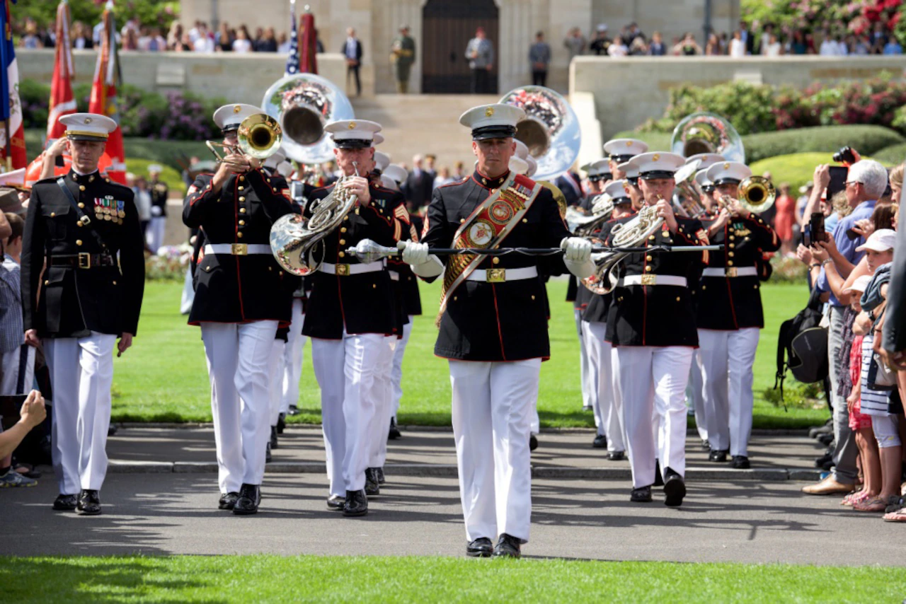

Many athletes, such as Steph Curry, use music as a way to get amped up before a game. Music enhances certain parts of the brain, allowing for reduced fatigue and increased endurance while performing.
Music is seen in politics as well. Mike Huckabee has country Josh Turner playing a country concert at one of his support rallies

The use of music in the military has been seen since the dawn of war. Military bands are used at many official events such as state funerals, military parades, naval christening, officer-commissioning ceremonies, and promotion ceremonies.